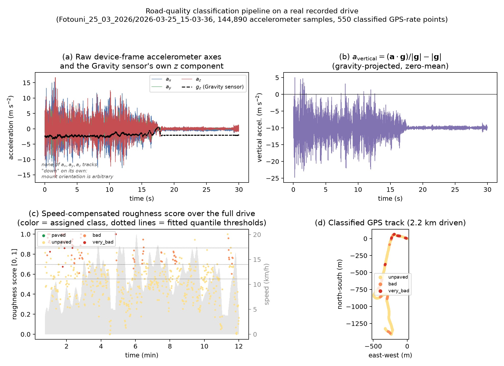

Why a phone can measure road roughness
Reliable road condition data is often missing in low and middle income regions. No laser profilometer survey has ever been carried out in most of these areas. Research has shown that an ordinary smartphone accelerometer can substitute for a dedicated pavement roughness instrument, at least for a general assessment of pavement type and condition, with no specialized hardware needed. Projecting an in-vehicle accelerometer signal onto the vertical axis correlates strongly with the International Roughness Index (IRI) once vehicle speed variation is corrected for 12. Android-rate accelerometer and GPS logging is a viable low-cost sensing setup for this task 3. Window-based vibration features such as standard deviation, RMS, and peak-to-peak amplitude, combined with rotational motion measurements, form a reliable feature set for smartphone-based road classification 4, and this project uses the same feature extraction approach. A separate threshold-based mechanism is needed to catch discrete, severe defects such as potholes, since they behave differently from gradual roughness 5. This motivates keeping a distinct "very bad" class. A data-driven, unsupervised roughness score, rather than a hardware-calibrated absolute IRI, is an accepted way to compare roughness classes when no ground truth is available 6.
This pipeline follows that same family of approaches. It uses only the phone's accelerometer, gravity sensor, and GPS, with no external hardware, and treats the resulting classification as a first, low-cost approximation rather than a calibrated IRI measurement.
Data collection
Data was collected with an Android phone running a Sensor Logger style app 78, mounted inside the vehicle during rides between Douala and Fotouni. The app logged accelerometer, gravity, gyroscope, orientation, and GPS streams sharing one elapsed time clock, with the accelerometer at about 100 Hz and GPS at about 1 to 2 Hz. Twelve drives were recorded across five trips, with different vehicles, phone mounts, and road surface mixes.
Pipeline
The classifier, implemented in the imu_road_quality package, modules signal_processing.py and classification.py, bins each drive into four ordered classes. These are paved, unpaved, bad, and very bad. The pipeline follows five steps, traced end to end below on a real drive.
Step 1. Orientation-invariant vertical acceleration. A phone's raw acceleration a = (aₓ, aᵧ, a_z) is reported in a device-fixed frame. That frame's orientation relative to "down" is arbitrary and drifts over a drive, so no single raw axis gives a usable vertical signal on its own. Android's own Gravity sensor g gives a low-passed gravity direction at every instant. Projecting acceleration onto it recovers an orientation-invariant vertical component:
a_vertical = (a·g)/|g| − |g|
The term |g| ≈ 9.81 m/s² is subtracted so the signal oscillates around zero and its magnitude reflects only bump-induced motion. This is the same projection used in the accelerometer IRI literature 1.
Step 2. Windowing. The roughly 100 Hz signal is binned into windows aligned to each GPS fix. Standard deviation, RMS, and peak-to-peak amplitude of the windowed dynamic vertical acceleration are computed as vibration-energy features 4. The default metric is the windowed standard deviation, σ_accel.
Step 3. Speed compensation. A vehicle slows down on rough patches. Without correction, this would distort the raw vibration metric. The score is divided by vehicle speed raised to a tunable power:
score_raw = σ_accel / max(v, v_floor)^p
The exponent is p = 1.5, with a floor of v_floor = 0.5 m/s to avoid a blow-up near a stop 1.
Step 4. Fixed cross-drive normalization. The compensated score is log-compressed, log(1 + score_raw), and min-max normalized to the range 0 to 1. This uses a fixed pair of calibration constants, score_min = 0.02 and score_max = 0.58, fit once as the 1st and 97th percentile pooled over all five retained drives. The same constants are then applied unchanged to every drive, including drives from a different phone, mount, or vehicle. An earlier version of this pipeline normalized each drive against its own distribution instead. Under that scheme, the same physical vibration level could map to a very different score depending only on which drive it happened to occur in. A fixed scale removes that problem.
Step 5. Fixed-threshold classification. The final classes come from fixed thresholds applied to the normalized score of every drive. The thresholds sit at 0.25, 0.5, and 0.75, dividing the score into four classes: paved (0 to 0.25), unpaved (0.25 to 0.5), bad (0.5 to 0.75), and very bad (0.75 to 1). Because the scale is fixed across all drives, a drive that never reaches a given roughness level simply has no points in that class.
An alternative normalization was also tested, where each drive is centered on its own median and scaled by its median absolute deviation, followed by a fixed logistic mapping to 0 to 1. Similar robust normalization techniques have been used to reduce device-dependent gain differences in accelerometer-based sensing 9. This alternative was not used for the results shown here, though it remains available in the project code. Per-drive normalization introduces a relative scoring problem. By centering each drive independently, the classification depends on the internal distribution of that specific drive rather than on an absolute road-quality scale. A smooth paved road and a severely degraded unpaved road could both end up with points above and below their own median, despite very different absolute roughness levels. Relative calibration only makes sense when reference data covering many road conditions, devices, and measurement days is available.
Finally, a short majority-vote smoothing filter, five points by default, is applied to the resulting class sequence. This reduces isolated classification errors near class boundaries while preserving real road-surface transitions, which happen over spatially continuous sections rather than at single points.

Results
Of the twelve recorded drives, seven were excluded after manual inspection. Reasons include a collapsed accelerometer sampling rate, a stationary vehicle, a too-short or erratic GPS track, or a recording that was a pedestrian walk rather than a car drive. The remaining five drives form the experiment set, all processed with the same fixed thresholds. For the drive shown above, the fixed thresholds split its 550 classified GPS-rate points into 29 paved, 65 unpaved, 187 bad, and 269 very bad points. For every drive, this classifier runs independently and produces an interactive map colored by road class. See the map below for all five drives.
Limitations
This pipeline should be read as a first-stage approach, not a validated road condition survey. Its main goal is an automatic, qualitative read of road conditions. It separates smooth asphalt suitable for higher speeds, other pavement types, and roads with significant degradation such as potholes or severe surface irregularities. The classes are designed to capture broad differences, where the contrast between classes is large and easier to detect reliably.
This first assessment is still valuable, because no existing dataset currently describes road surface type or condition for the surveyed area. Road quality has a direct effect on travel speed and can cause large swings in expected travel times, so even a coarse automatic classification is useful for improving travel-time estimates and guiding future data collection.
Three limitations should be kept in mind. First, the classification relies only on accelerometer and GPS data, with no images or street-level visual information at any stage. Synchronized imagery was already collected for some drives, and using it is a natural next step. It could validate classified segments visually and, over time, support training a vision-based classifier to complement or check the vibration-based one.
Second, there is no ground truth road condition measurement. The score_min and score_max calibration constants give a consistent scale within the current dataset, but they are not a hardware-independent or physically calibrated measure like the IRI. Fixing the class thresholds at 0.25, 0.5, and 0.75 removes the earlier within-dataset relativity problem, where the same class label could mean different roughness levels on different drives. It does not remove the influence of the vehicle and sensor setup. Suspension characteristics, tire pressure, and phone-mount damping all affect the measured vibration, so the same road surface can produce different scores under different setups.
Third, a reliable road quality assessment normally needs repeated measurements from multiple vehicles and sensor setups. Data from different suspensions, tire pressures, and mounting methods can be used to estimate and reduce vehicle-specific effects and improve calibration across datasets. In this pilot, only one vehicle and one phone mount were available for each surveyed segment. The resulting road classes should therefore be read as fixed-scale, single-observation estimates of road condition, not as fully generalized measurements of physical road roughness.
References
- (2014). Measurement of International Roughness Index by Using Z-Axis Accelerometers and GPS. Mathematical Problems in Engineering.
https://doi.org/10.1155/2014/928980 - (1986). Guidelines for Conducting and Calibrating Road Roughness Measurements. World Bank Technical Paper No. 46.
https://documents1.worldbank.org/curated/en/851131468160775725/pdf/multi-page.pdf - (2019). An Experiment on Measurement of Pavement Roughness via Android-Based Smartphones.
https://arxiv.org/pdf/1907.13120 - (2025). Research on the Evaluation and Analysis of Road Surface Roughness Based on Smartphone Sensors and SVM. Scientific Reports.
https://www.nature.com/articles/s41598-025-34396-3 - (2013). Real Time Pothole Detection Using Android Smartphones with Accelerometers.
https://www.researchgate.net/publication/224253154 - (2026). Multi-Modal Assessment of Road Roughness Using Smartphone Applications, Acceleration, and Passenger Ratings.
https://arxiv.org/html/2606.03427v1 - (2024). Sensor Logger Dataset Records.
https://zenodo.org/records/20277980 - (2024). Awesome Sensor Logger.
https://github.com/tszheichoi/awesome-sensor-logger/ - (2017). Feature Extraction for Robust Physical Activity Recognition. Human-centric Computing and Information Sciences.
https://hcis-journal.springeropen.com/articles/10.1186/s13673-017-0097-2